★ 最新（set6・7ネタ）
1 / 7
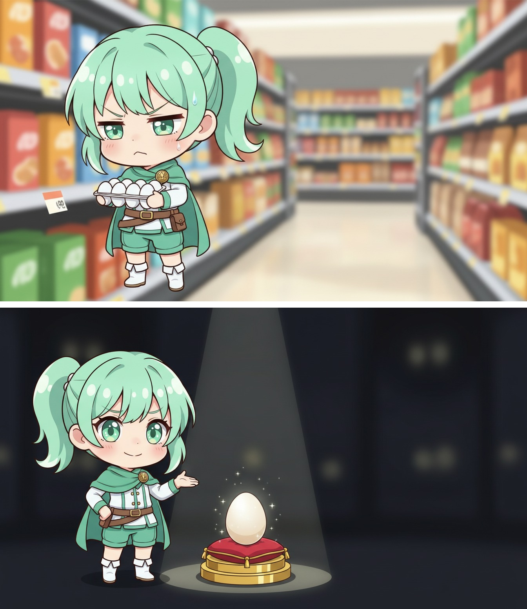
↑ 画像を長押しして保存
10円安い卵のために、2駅となりのスーパーへ。往復の時間、しっかり溶けてく。
それ、10円を取り返すために、1時間を差し出す両替だよ。世界一の高級卵になってる。
浮かせた時間こそ、自分に使お。節約、目的になってない？
― あなたに刺さったのは、どれ？
▶ ゆるクエの各リンクはこちら → https://lit.link/nyanshishou
#がんばらない自己啓発 #ゆるクエ #節約しすぎ
2 / 7
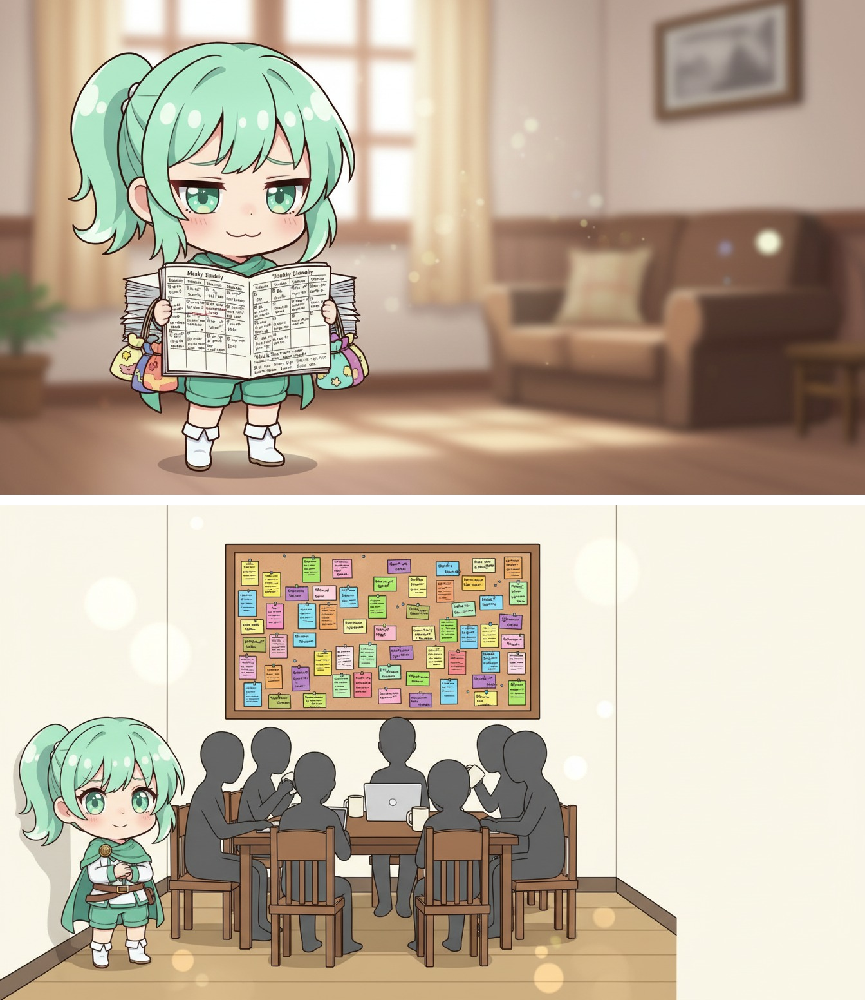
↑ 画像を長押しして保存
頼みはぜんぶ引き受けて、予定が他人でぎっしり。自分の欄だけ、ずっと空席。
あなたの一日、知らない間に24時間レンタルスペース。予約してるのはぜんぶ他人で、オーナーのあなたは立ち見。
次の1コマは、自分の名前で予約しよ。自分の予定、後回しすぎ？
― あなたに刺さったのは、どれ？
▶ ゆるクエの各リンクはこちら → https://lit.link/nyanshishou
#がんばらない自己啓発 #ゆるクエ #断れない
3 / 7
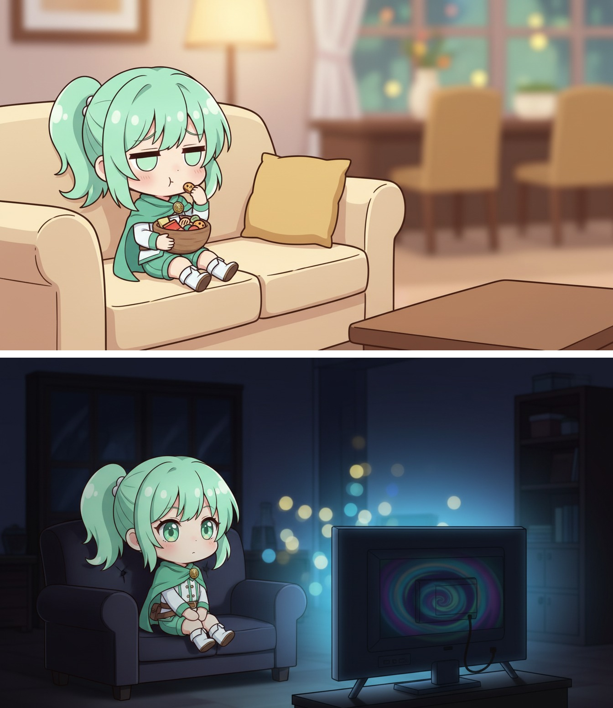
↑ 画像を長押しして保存
お腹はすいてないのに、口がさみしくて食べちゃう。気づけば、ずっとつまんでる。
それ、お腹じゃなくて「静けさ」を埋めてるの。つけっぱなしのテレビと同じ。見てないのに点いてる。
一回スイッチ切って、白湯でも飲も。それ、お腹？さみしさ？
― あなたに刺さったのは、どれ？
▶ ゆるクエの各リンクはこちら → https://lit.link/nyanshishou
#がんばらない自己啓発 #ゆるクエ #口さみしい
4 / 7
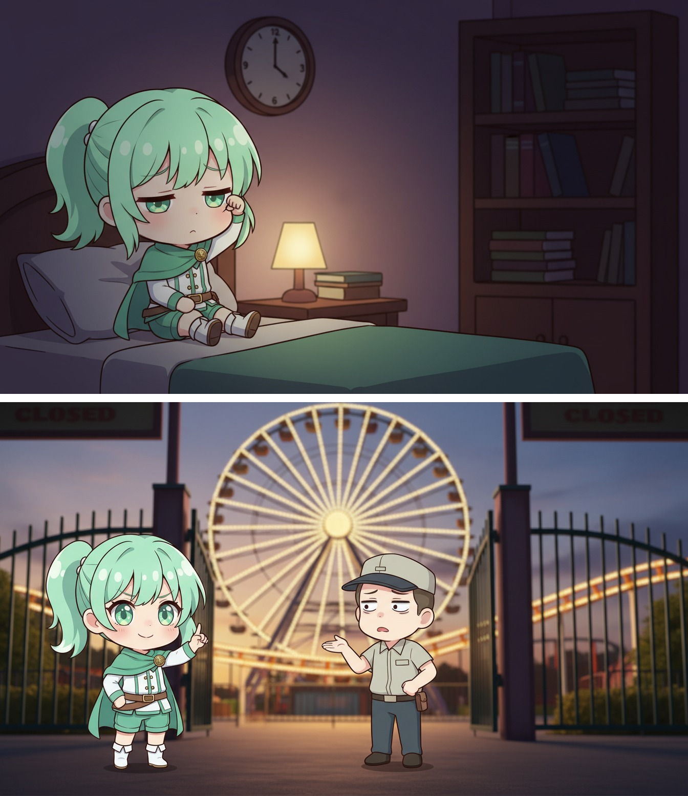
↑ 画像を長押しして保存
明日が来るのが惜しくて、用もないのに夜更かし。わかってても、まだ起きてる。
閉園アナウンスが鳴っても「もう一周だけ」の人。それ、夜のあなた。名残りで帰り損ねてる。
今日を惜しむ気持ちは、明日の前売り券に。明日のあなた、寝かせてあげた？
― あなたに刺さったのは、どれ？
▶ ゆるクエの各リンクはこちら → https://lit.link/nyanshishou
#がんばらない自己啓発 #ゆるクエ #夜更かし
5 / 7
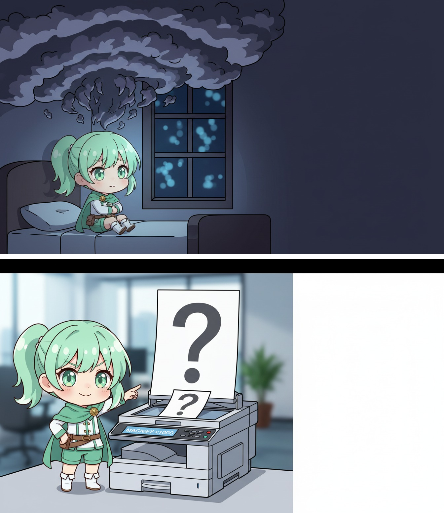
↑ 画像を長押しして保存
昼は平気だったのに、夜になると悩みが巨大化。ひとりで、どんどん大きくなる。
夜って、悩み専用の「拡大コピー機」なんだよね。朝にはたいてい、A4サイズに戻ってる。
今は等倍で見れないから、いったん寝かせよ。それ、拡大されてない？
― あなたに刺さったのは、どれ？
▶ ゆるクエの各リンクはこちら → https://lit.link/nyanshishou
#がんばらない自己啓発 #ゆるクエ #夜の不安
6 / 7
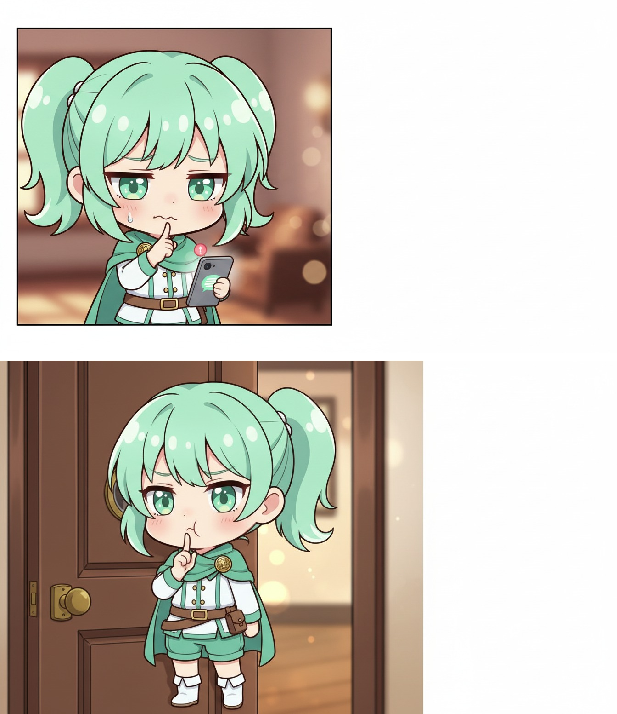
↑ 画像を長押しして保存
既読つけたら返さなきゃ…が重くて、通知をチラ見だけ。返したい気持ちは、あるのにね。
ドアの覗き穴から確認して、そっと居留守。相手はずっと、ドアの前で待ってるんだ。
スタンプ1個でいいから、ドア開けてみよ。居留守、つらいの自分かも？
― あなたに刺さったのは、どれ？
▶ ゆるクエの各リンクはこちら → https://lit.link/nyanshishou
#がんばらない自己啓発 #ゆるクエ #既読が重い
7 / 7
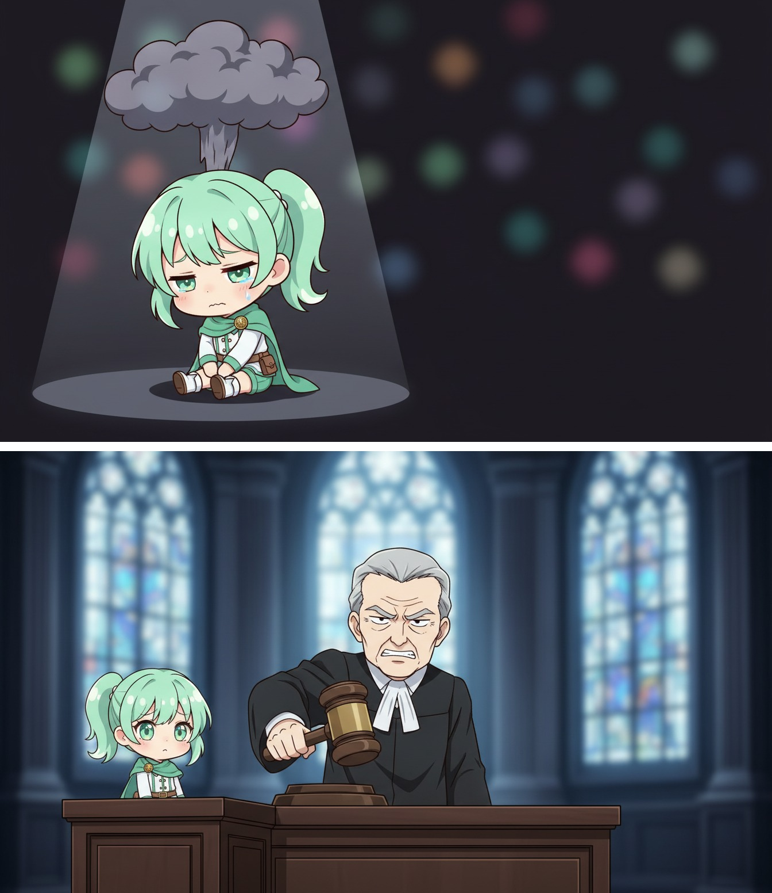
↑ 画像を長押しして保存
他人のミスには「ドンマイ！」。自分のミスには終身刑。自分にだけ、やたら厳しい。
頭の中に、自分専属のやたら厳しい裁判官。判決はいつも有罪、減刑なんて一度もなし。
たまには自分にも、執行猶予あげよ。自分にだけ、厳しすぎない？
― あなたに刺さったのは、どれ？
▶ ゆるクエの各リンクはこちら → https://lit.link/nyanshishou
#がんばらない自己啓発 #ゆるクエ #自分に厳しい
前回ぶん（残してあります／追記式）
1 / 7
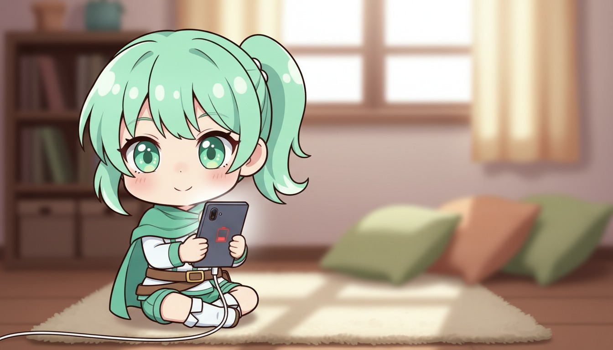
↑ 画像を長押しして保存
横になっても、頭の中はずっと仕事のことばかり。それじゃ、全然休めてない。
それ、充電しながらスマホを使ってるのと同じ。画面つけっぱなしじゃ、いつまでも充電はたまらないよ。
今日は「なにも考えない5分」をひとつ。頭の電源、いちど切ってみよう。
― あなたに刺さったのは、どれ？
▶ ゆるクエの各リンクはこちら → https://lit.link/nyanshishou
#がんばらない自己啓発 #ゆるクエ #休み下手
2 / 7
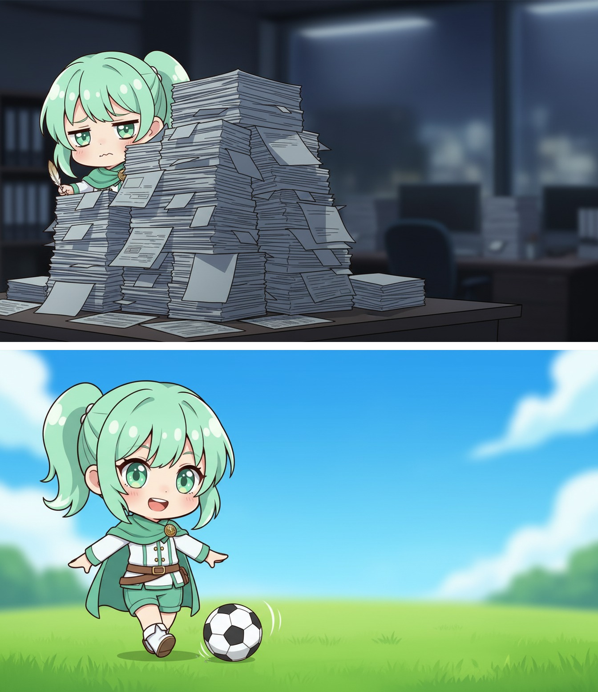
↑ 画像を長押しして保存
「お願いできる？」に反射で「はい」。気づけば自分だけ書類の山、今夜も一人残業。
頼みごとは、味方へのパスだよ。一人でドリブル突破して転ぶより、パスしてもらえた方が、相手はうれしいの。
今日ひとつだけ、誰かに小さくお願いしてみよう。
― あなたに刺さったのは、どれ？
▶ ゆるクエの各リンクはこちら → https://lit.link/nyanshishou
#がんばらない自己啓発 #ゆるクエ #頼り下手
3 / 7
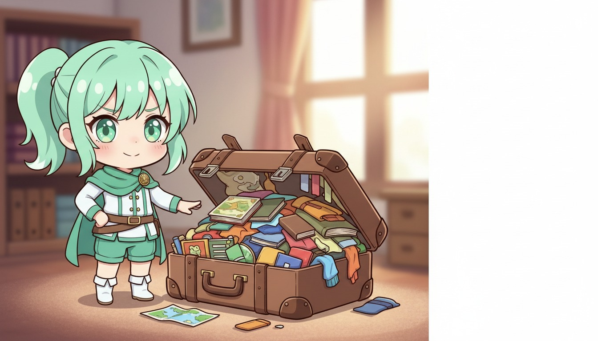
↑ 画像を長押しして保存
「3日後でいい」資料に、3日まるまる溶かす。で、当日の朝にバタバタ。
仕事は、カバンの大きさに合わせて膨らむもの。時間が足りないんじゃなくて、入れ物がデカすぎただけ。
締切、自分で半分にしてみよう。
― あなたに刺さったのは、どれ？
▶ ゆるクエの各リンクはこちら → https://lit.link/nyanshishou
#がんばらない自己啓発 #ゆるクエ #締切
4 / 7
↑ 画像を長押しして保存
「やる気が出たら掃除しよ」→ ソファーでスマホ。気づけば一週間、部屋はそのまま。
やる気は、燃えてからやるものじゃない。先に小枝（5分）をくべるから、後から燃え上がる。待ってる間は、ずっと寒いまま。
机に1分だけ座る。先にやってみよう。
― あなたに刺さったのは、どれ？
▶ ゆるクエの各リンクはこちら → https://lit.link/nyanshishou
#がんばらない自己啓発 #ゆるクエ #やる気
5 / 7
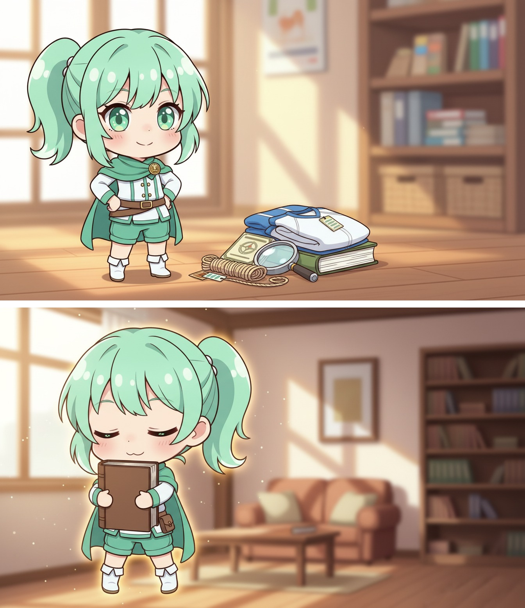
↑ 画像を長押しして保存
タグも切ってない新品ウェア。進捗0%の講座。なのに、また新しいのを買っちゃう。
未開封の参考書は、お守りなんだ。持ってるだけで安心するから、いつまでも開かなくなる。
準備0でいい。今日、1回だけ開いてみよう。
― あなたに刺さったのは、どれ？
▶ ゆるクエの各リンクはこちら → https://lit.link/nyanshishou
#がんばらない自己啓発 #ゆるクエ #準備沼
6 / 7
↑ 画像を長押しして保存
3日続いて、4日目にできなくて。「やっぱり続かない」って、自分を全否定。
3日でやめられるのは、損切りの早い、優秀なトレーダー。向いてないと気づけたのも、立派な経験値だよ。
「やめた」じゃなく「休憩中」。また1日だけ、戻ろう。
― あなたに刺さったのは、どれ？
▶ ゆるクエの各リンクはこちら → https://lit.link/nyanshishou
#がんばらない自己啓発 #ゆるクエ #三日坊主
7 / 7
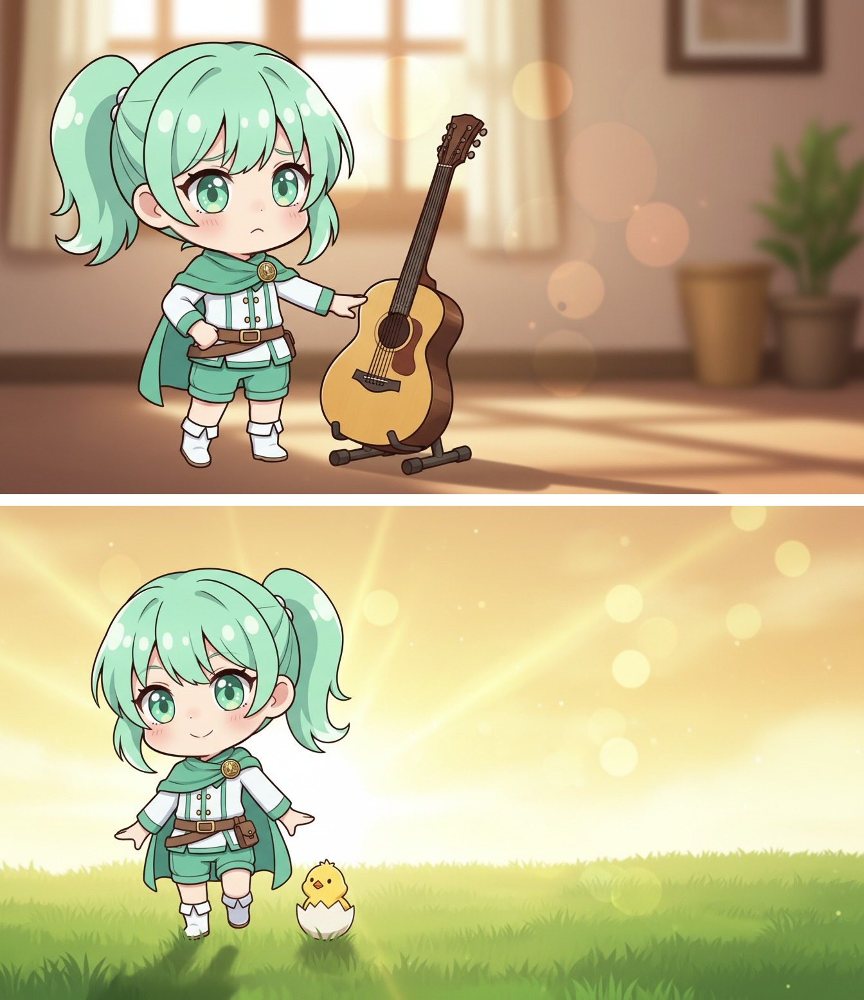
↑ 画像を長押しして保存
「もういい歳だし、今さら」って、新しいことを諦めちゃう。
今日のあなたが、これからの人生でいちばん若い。迷ってる今この瞬間も、最年少記録は更新中。
今が一番若い日。気になってたこと、今日ひとつ始めよう。
― あなたに刺さったのは、どれ？
▶ ゆるクエの各リンクはこちら → https://lit.link/nyanshishou
#がんばらない自己啓発 #ゆるクエ #今が一番若い